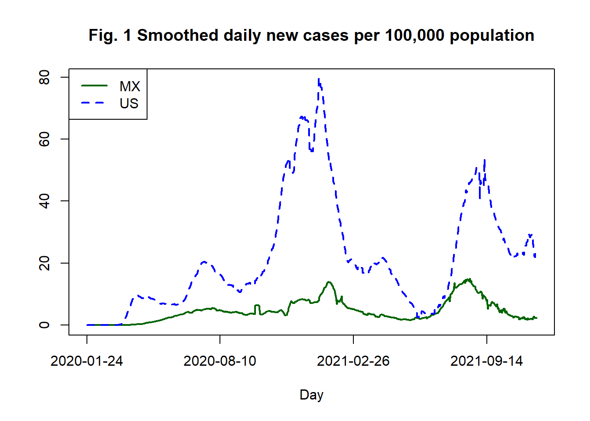
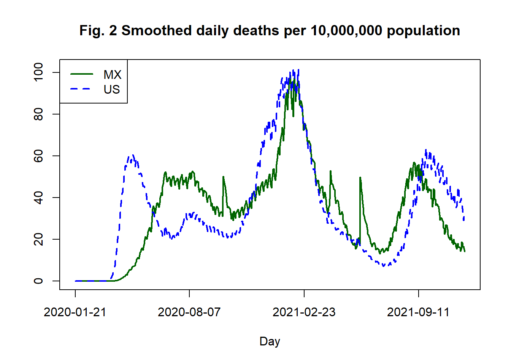
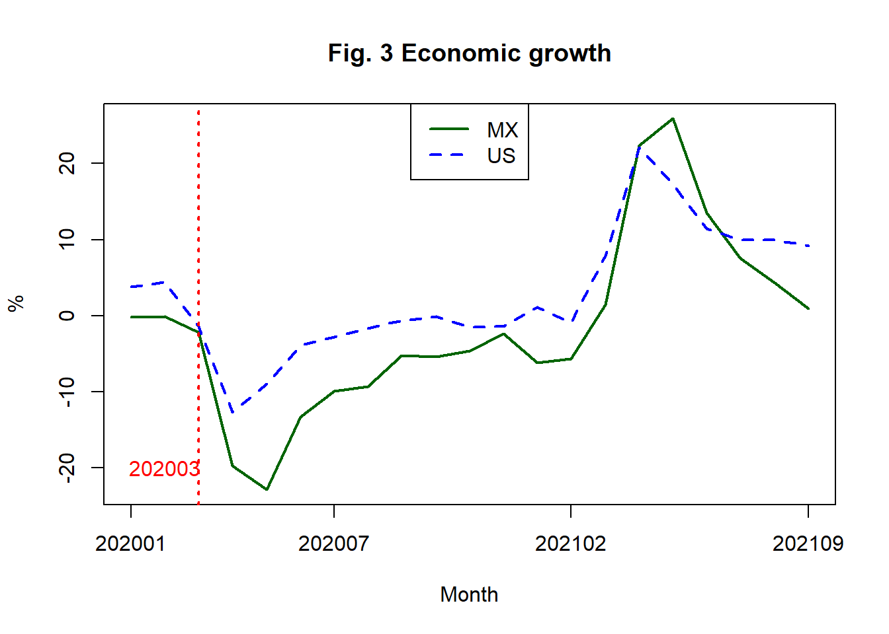
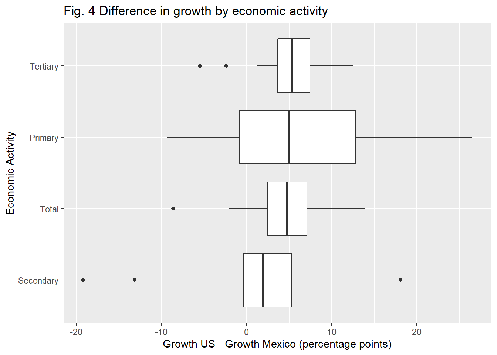
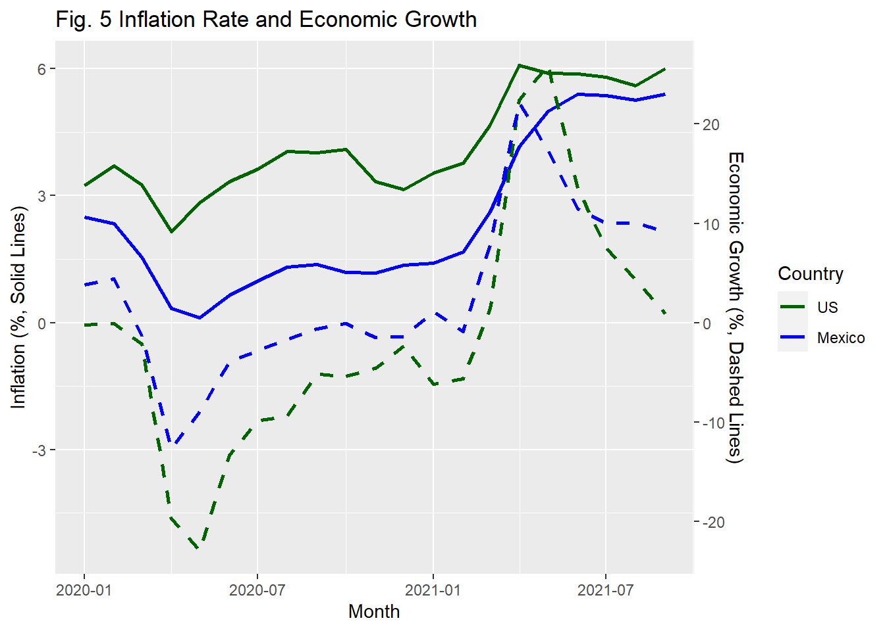
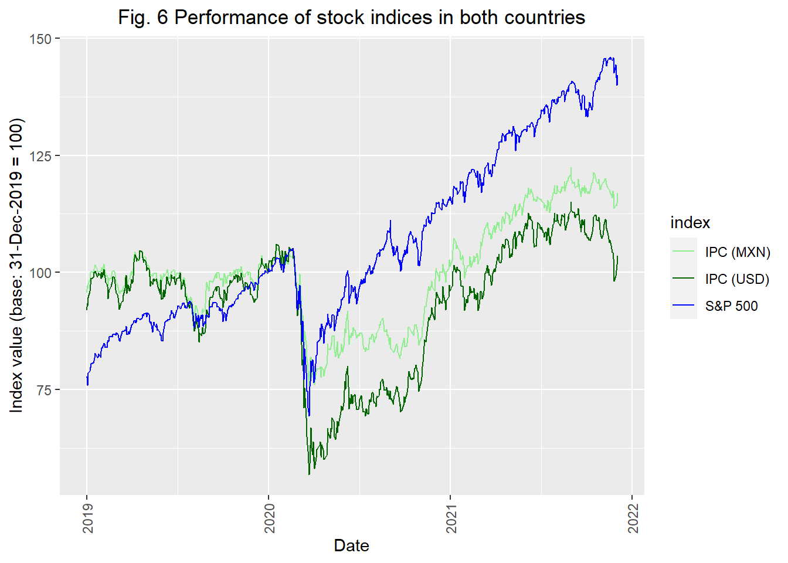
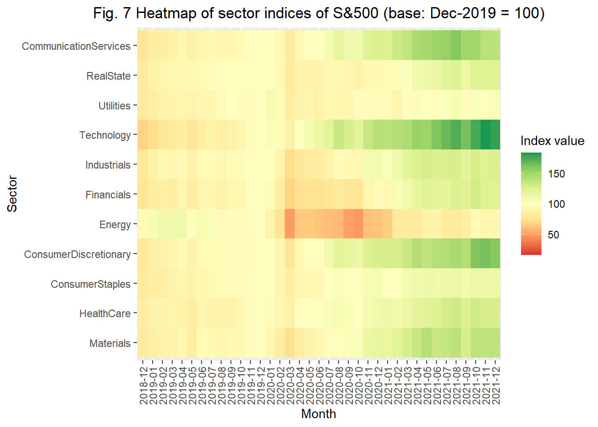
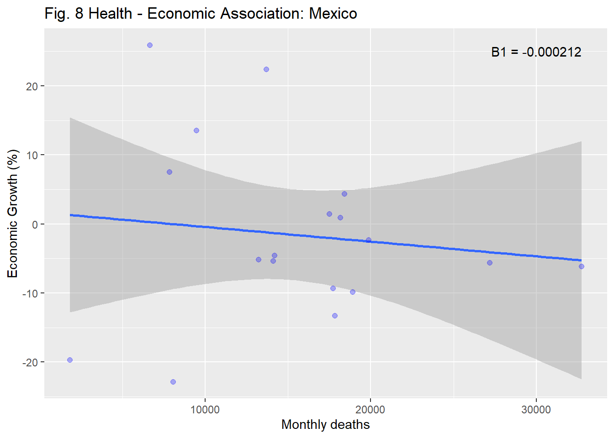
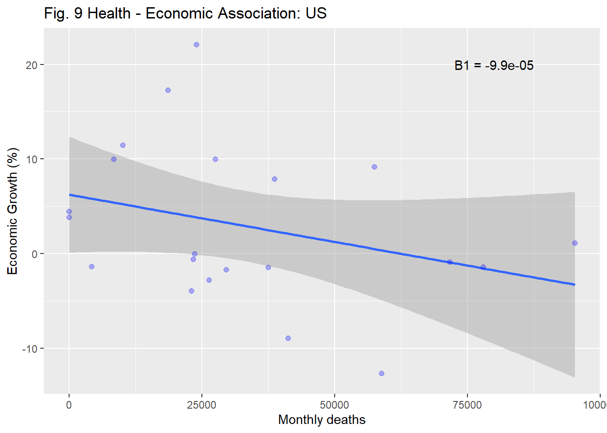
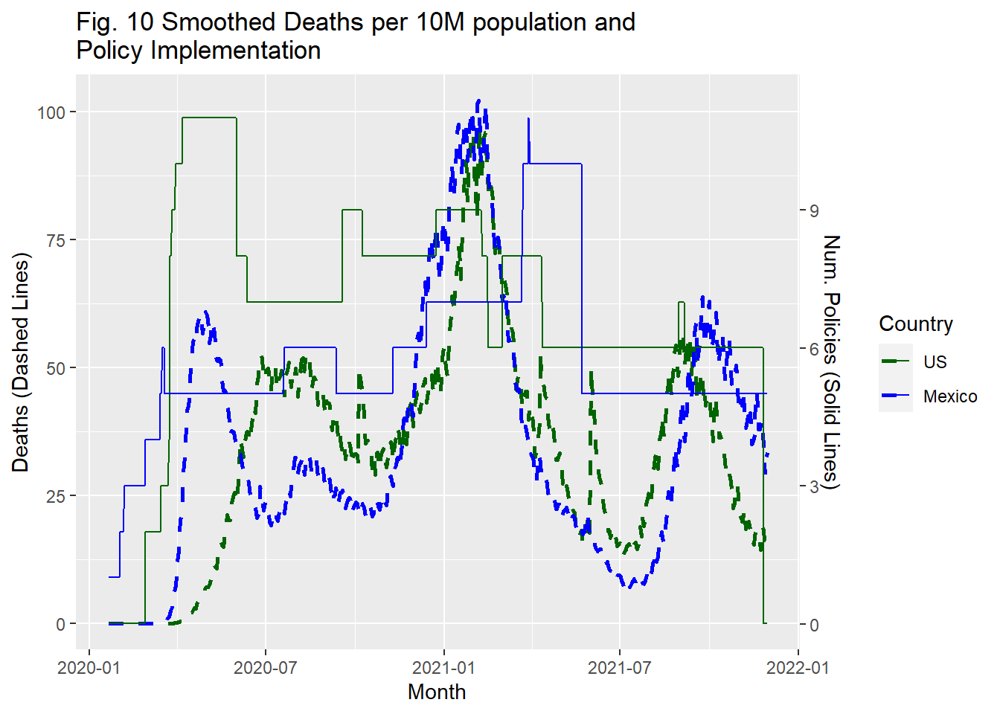

Chapter 5 Results
5.1 Which economy suffered the most during the pandemic?
5.1.1 Health Vertical
Th first thing that comes to mind when thinking the pandemic’s effect in a particular country are daily infection cases. In order to compare such infections between countries, here we present a time-series plot to compare daily cases in each country. To make the comparison fair among the two countries, we present the cases per 100,000 population from 2020-01-25 to 2021-11-27. For visualization purposes, we compute the 7-day moving average of the series.

We can observe that the US consistently reports more infection cases per capita than Mexico. US also shows evidence of more waves than Mexico: two little waves before 2020-08-11, in a period in which Mexico only experienced one, and another little wave directly after the big 2020 winter wave.
Despite the previous, both countries follow a somewhat similar trend in the three big waves that we may categorize as the initial wave with peak around July 2020, the 2020 winter wave, and the most recent wave with peak around August 2021.
We now focus on what can be considered as the most important severity indicator in the pandemic: number of deaths. In the same spirit of the previous comparison, here we present daily death per Daily deaths per 10 million population.

We can appreciate an interesting behavior. Unlike the reported active cases, deaths per capita are similar between the two countries, whith one being on top of the other only momentarily. Here we can see with more influence the effect of the three waves in both countries. In the first one, US started having more deaths earlier than Mexico, but was surpased by it around early July 2020 until the second wave in winter 2020 increased the deaths with more acceleration in the US but it was followed shortly after by Mexico.
Unlike the first to waves when the US preceded Mexico, in the third one it was Mexico the country that started suffering the death toll earlier, and it was followed shortly after by the US.
Both countries suffered similar death tolls across the pandemic but the US had more reported infection cases. This may be explained by the US having better healthcare system and coverage, something that Mexico may lack making infections more likely to end in a regrettable death.
5.1.2 Economic and Financial Vertical
We first turn our attention to annual economic growth of the two countries. In Figure 3 we display the monthly series of annual percentage change of GDP for Mexico and the US from January 2020 to September 2021.

We can see that prior to March 2020, both economies had a steady economic growth (in the case of Mexico, there was a recession actually), and when the governments decided to close interaction activities, the production in the US droped to negative levels and actually tied the decrease in Mexico, so we can say the US was the economy that reacted the most at the beginning, from 4.42% to -1.38% (Mexico moved from -0.107% to -2.17% in the same period).
However, Mexico was the country that suffered the greatest downfall in production across the time window, with a huge -22.86% growth in March and a consistently less growth in the following months, except for May and June 2021, where the arithmetic effect of having a small production one year ago (first wave of the pandemic), will make the high growth seem as product of an increase of the current production when it is actually due to a devastating decrease of the past one.
It is worth nothing that it was only in the beginning of the pandemic that both economies suffered such an unprecedented decrease, as the second and third waves around winter 2020 and August 2021 (see Fig. 2) did not have the same impact as the first. The is may be explained due to the closing policies being more relaxed after the first tight lock down, something we will explore in section 5.3.
We now turn attention on the impact f the pandemic at sub levels of economic activities. To analyze with more detail the difference in impact between countries, we compute the difference in growth, that is \(\Delta US_k - \Delta MX_k\) where \(\Delta US_k\) represents the annual growth in the US for economic activity \(k \in\) (primary, secondary, tertiary).

We see in all cases the difference in growth has median greater than 0, which tells us about a greater recession in Mexico than in US. Tertiary activities show the greatest difference with a median difference of more than 5 percentage points, which indicates that the US has greater resilience in all sectors, but specially in service activities.
It is worth noting that primary and secondary activities have the first quarter less than 0, indicating that around 25% of the times, Mexico showed a higher economic growth during the pandemic. This speaks of an economy that focuses more in extraction of raw materials and manufacturing than in services, when compared to US’ standards.
We now turn our attention to inflation and its relation to economic activity, to see the effects of the pandemic in the prices of each economy from January 2020 to September 2021.

We can see that the initial lock down decreased both the economic growth and inflation rate in the two countries, this is a natural consequence of less activity implying less demand for products and services and as such, a decrease in prices and in inflation.
However, as the economic growth (dashed lines) started increasing, product of the reopening of both economies around June 2020, the inflation increased to levels higher than before the pandemic, and even when the economic activity started decreasing after June 2021 towards its pre-pandemic state, the inflation still seems to be in a positive trend.
In this case again, Mexico is the country experiencing harder consequences as inflation is consistently higher than in the US, and the last observed months (August to September 2021), show a greater slope than the US.
We now will turn to analyzing the performance of the financial stock markets throughout the evolution of the pandemic.
We now present a comparison of the stock indexes in both countries, indexed at the same level at the end of 2019, we can observe that the Mexican market slightly under performs the american reference (S&P500), but this is misleading because after adjusting by the exchange rate, the effect is more severe as the demand for US dollars was globally exacerbated.

We now turn our attention to the sector in the US market. Given that we have sectorized of the US stock market, we decided to create a heat map of these sectors to see which aspect of economic activity was perceived to be most affected by market participants.

We can observe that energy was the sector most impacted by the pandemic as governments soon started imposing travel restrictions which greatly diminished the outlook for the price of oil in the following months. This expectation came to be realized as the enegy index is the only sector of the S&P 500 that has not recovered its pre-pandemic level. In addition, we can also observe that the Technology sector not only has been the most resilient during the pandemic, but has had a strong rally during the pandemic, something that is explained by the strong demand of IT hardware and services as companies had to migrate to a remote work environment.
Finally, something that come as a surprise to us was the relatively strong performance of the sector of Consumer Discretionary products. This sector tracks companies delivering goods and services that are considered non-essential by consumers, but desirable if their available income is sufficient to purchase them. Representative companies within this sector are Amazon, Home Depot, McDonald’s, Nike and Lowe’s. Although at first glance one would have thought that people would prioritize savings over non-essential consumption, the massive financial aid programs that went into effect seem to have supported discretionary spending by American households.
5.2 Relation between public health and economic conditions in each country
We first focus on the impact the pandemic had in the economic activity of the two countries. For this, we display scatterplots of economic growth vs monthly deaths for the two countries, and estimate a regression line in order to asses the level of association between what can be seen as the hardest severity indicator of the pandemic, and the overall economic outlook of a country. We also print the estimated \(\beta_1\) coefficient that relates the death counts to the economic growth.

We can see that the fitted line in both cases shows a negative trend, indicating that higher the deaths, lower the economic growth. The estimated \(\beta_1\) coefficient for mexico is greater in absolute value, pointing out that for this country the economic fallout was worse.
5.3 Which government designed the most effective public policies to deal with the pandemic?
To analyze the policy evolution of the two countries, we count the number of active anti-COVID policies in a given day, among the following 14:
School closing, workplace closing, cancel events, gatherings restrictions, transport closing, stay_home restrictions internal_movement restrictions, international movement restrictions, information campaigns, testing policy, contact tracing, facial coverings, vaccination policy, elderly people protection.
This variables gives us information about each policy’s status in the whole country. We construct a discrete time series for each country that bounded to be between 0 and 14. We display it together with the smoothed daily per capita deaths of each country.

We can see that the US started implementing policies (solid blue line) before the pandemic started in the country and in advance of Mexico. The US stabilized the number of policies around 6 until the second wave of winter 2020 when it reached around 9. After the second wave the US decreased the number of policies to just 5: international movement restrictions, information campaigns, testing policy, contact tracing and vaccination policy.
In contrast, Mexico overreacted in the beginning of the pandemic by rapidly increasing the restriction policies to 11. Realizing this overreaction, the government then decreased the number to around 8 and has been decreasing it with time.
In average, Mexico has been more restrictive as the number of policies is greater than the US in many periods. In contrast the US has been more precise by implementing policies in advance, not overreacting and increasing them only in the most complex periods (near the peak of the second wave).
It is also worth noting that even when US implemented less policies in average, the deaths per capita are similar, which reinforces the argument of a better implemented set of policies.